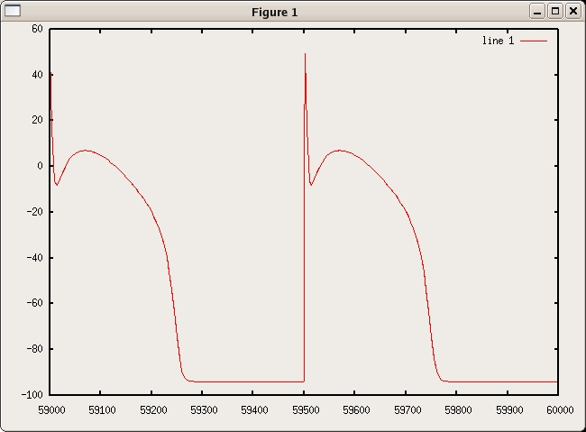

This is the readme for the model associated with J. J. Fox, J. L. McHarg, and R. F. Gilmour Jr, Ionic mechanism of electrical alternans, Am J Physiol Heart Circ Physiol 2002; 282: 516-530 and Zheng I. Zhu and Colleen E. Clancy Am J Physiol Heart Circ Physiol. published 12 October 2007, 10.1152/ajpheart.00476.2007 Usage: The code author, Zheng Zhu, recreated the Fox et al. model in a C++ program which conforms to ansi so it can be built with gnu C++. For example under linux , compile with g++ cellular_model_TS_mutation.cpp -lm -O4 -o ts and then run with ./ts (enter a file name like a.dat when asked) The program iterates 100 times and finishes within a minute or so. You can produce graphs after starting octave, for example, with commands like load a.dat plot (a(:,1),a(:,3)) (graphs the voltage trajectory:) 